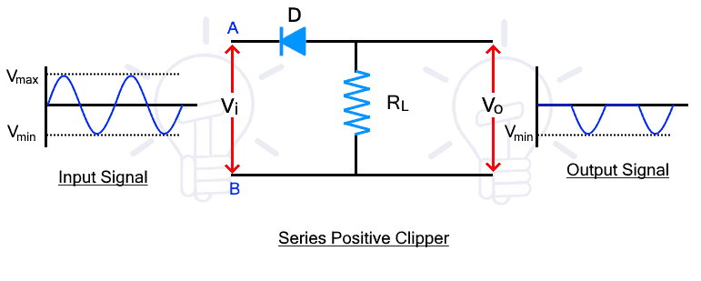
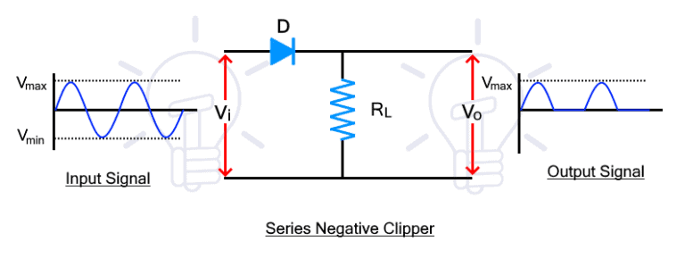
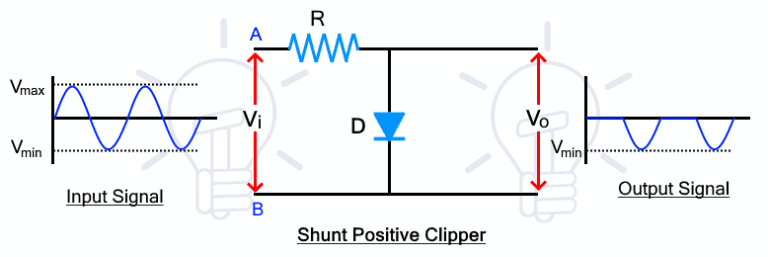
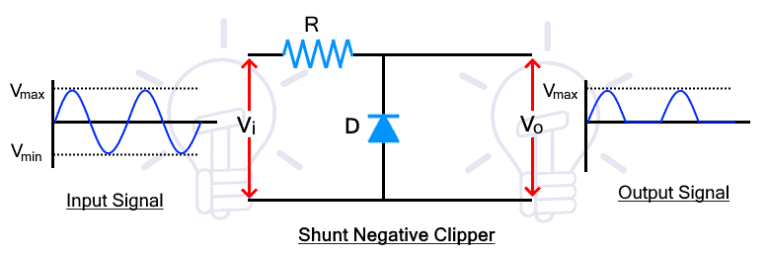

Clipper circuits are the electronic circuits that clip off or remove a portion of an AC signal, without causing any distortion to the remaining part of the waveform. These are also known as clippers, clipping circuits, limiters, slicers, etc
The main component of a clipper circuit is a diode or any other type of diode. The diode clips a portion from the input waveform. The shape of the waveform depends on the configuration as well as the design of the circuit.
In series clipper circuits, the diode is connected in series with the output. In such clippers, the input signal appears at the output when the diode is forward biased and conducting. On the contrary, the shunt clippers passes the input signal when the diode is reverse biased or blocking.
It is divided into positive and negative clippers.
Series positive clippers remove or clips the positive half of the waveform. In a series positive clipper, the diode is in reverse biased and in series with the output as shown in the figure below.
The input signal Vi is applied at the input side while the output is taken at the load resistor. During the positive half cycle of the input, the voltage at point A is positive than point B. So the diode is in reverse bias and there is no current conduction. The input signal cannot pass, thus there is no voltage drop at the Rl. Therefore, there the positive half cycle does not appear at the output as shown in the figure.
the negative half-cycle, the voltage at point A is negative than point B. The diode becomes forward bias and the signal pass through it. The signal appears across the Rl. Therefore, the negative half cycle passes through the circuit and appears at the output.
The series negative clipper circuit clips the negative half of the input cycle. its circuit diagram is given below.
During positive half cycle, the diode is forward biased due to the input voltage. Therefore, the input signal passes through the diode and appears at the output.
During the negative half cycle, the diode becomes reverse-biased and it does not conduct. Therefore, there is no voltage at the output and the negative half cycle is clipped from the input waveform.
In shunt clippers, the diode is connected in parallel with the output. The input signal appears the output when the diode is blocking as opposed to the series clippers.
It is divided into positive and negative clippers.
The shunt positive clipper clips the positive half cycle of the input waveform. The circuit diagram of the shunt positive clipper is given below
During the positive half cycle, the diode is forward biased as the voltage at point A is greater than point B. so the diode conducts the input signal and there is no voltage difference at the output.
During the negative half-cycle, the voltage polarity of the input signal at points A and B reverses and the diode becomes reverse biased. Therefore, the diode blocks the input signal and the signal voltage appears across the diode that is taken as the output of the clipper.
such a way, the shunt positive clippers, clips or remove, the positive half of the input cycle and allow the negative half cycle.
The shunt negative clipper clips the negative half of the input waveform. The circuit diagram is given below
During the positive half cycle, the diode is reversed biased, thus it blocks the signal that appears across it. therefore, the positive half also appears at the output.
During the negative half cycle, the diode is forward biased and it conducts the signal. Therefore, there is no voltage at the output for the negative half cycle. Thus the shunt negative clipper clips or removes the negative half of the input waveform.